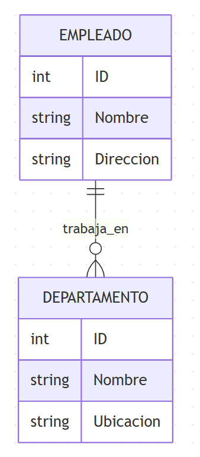

Cada entidad se convierte en una tabla
CREATE TABLE EMPLEADOS (
ID_EMPLEADO INT PRIMARY KEY,
NOMBRE VARCHAR(50),
APELLIDO VARCHAR(50)
);
Según la cardinalidad:
EMPLEADO (1:N) trabaja_en DEPARTAMENTO
Atributos Empleado: ID, Nombre, Dirección
Atributos Departamento: ID, Nombre, Ubicación

CREATE TABLE DEPARTAMENTOS (
ID_DEPARTAMENTO INT PRIMARY KEY,
NOMBRE VARCHAR(50),
UBICACION VARCHAR(100)
);
CREATE TABLE EMPLEADOS (
ID_EMPLEADO INT PRIMARY KEY,
NOMBRE VARCHAR(50),
DIRECCION VARCHAR(100),
ID_DEPARTAMENTO INT,
FOREIGN KEY (ID_DEPARTAMENTO)
REFERENCES DEPARTAMENTOS(ID_DEPARTAMENTO)
);
ESTUDIANTE (N:M) matricula CURSO
CREATE TABLE ESTUDIANTES (
ID_ESTUDIANTE INT PRIMARY KEY,
NOMBRE VARCHAR(50)
);
CREATE TABLE CURSOS (
ID_CURSO INT PRIMARY KEY,
NOMBRE VARCHAR(50)
);
CREATE TABLE MATRICULAS (
ID_ESTUDIANTE INT,
ID_CURSO INT,
FECHA_MATRICULA DATE,
PRIMARY KEY (ID_ESTUDIANTE, ID_CURSO),
FOREIGN KEY (ID_ESTUDIANTE)
REFERENCES ESTUDIANTES(ID_ESTUDIANTE),
FOREIGN KEY (ID_CURSO)
REFERENCES CURSOS(ID_CURSO)
);